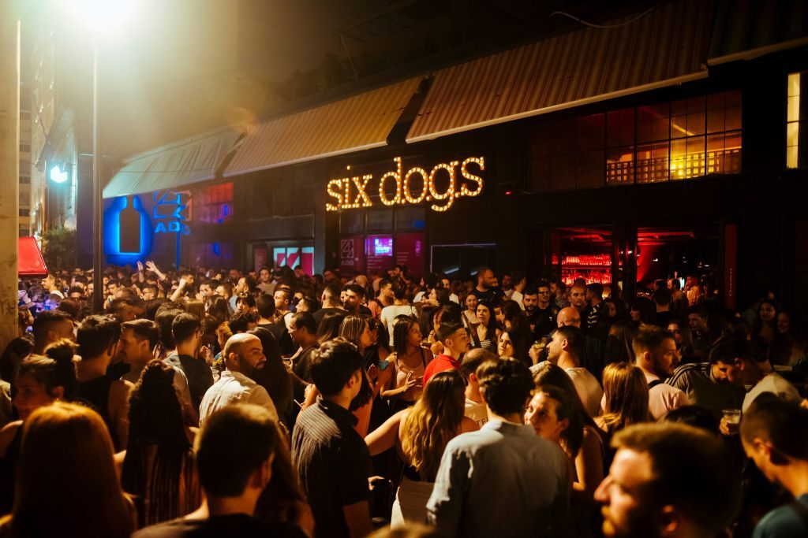
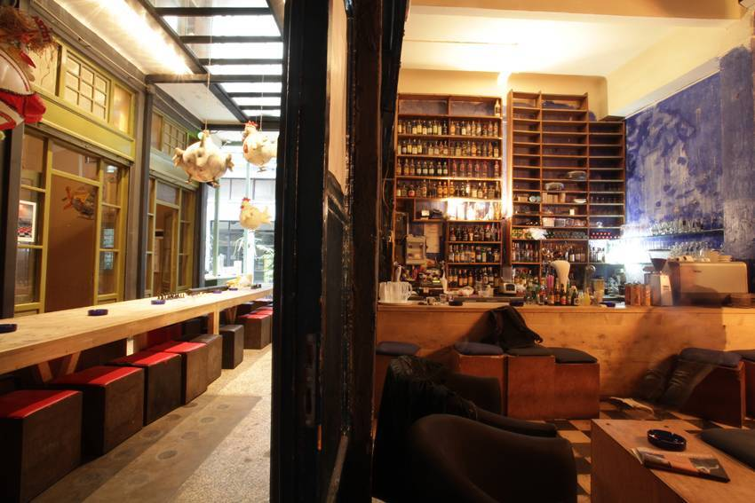
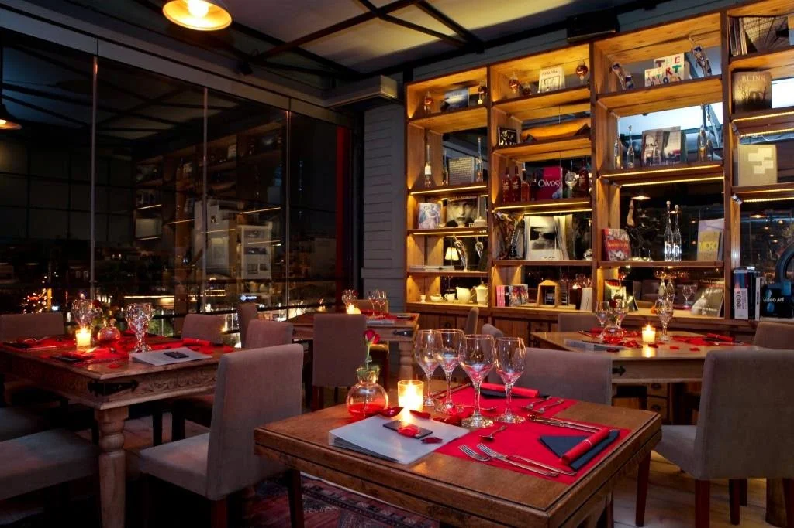
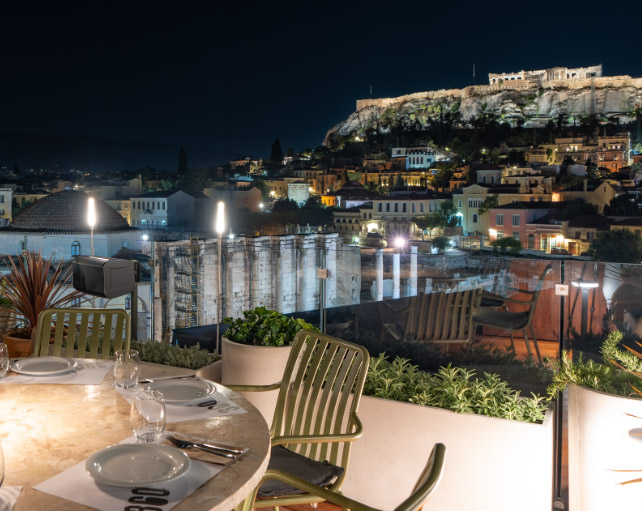
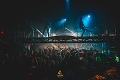
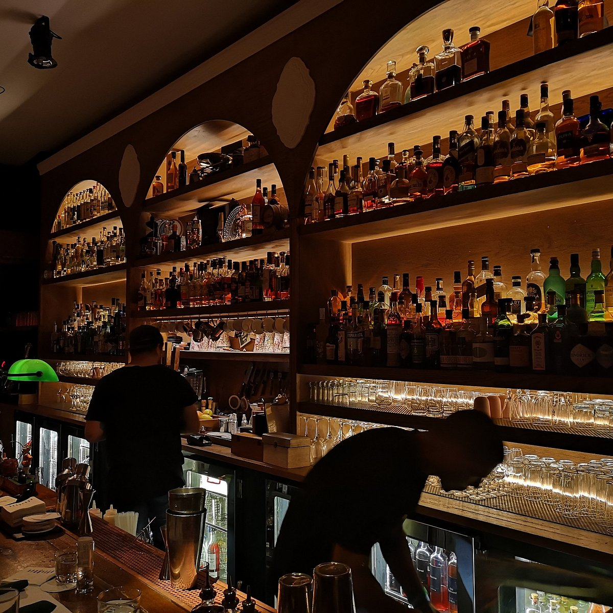
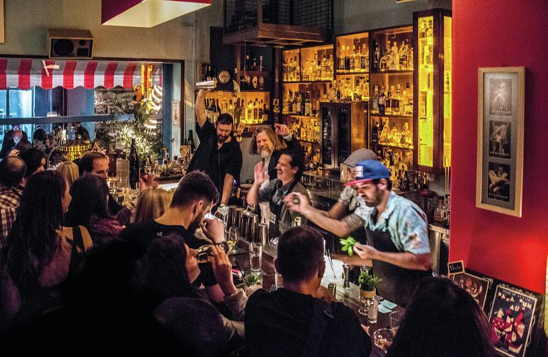
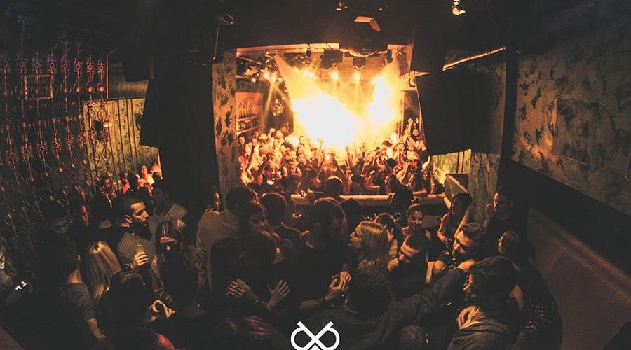
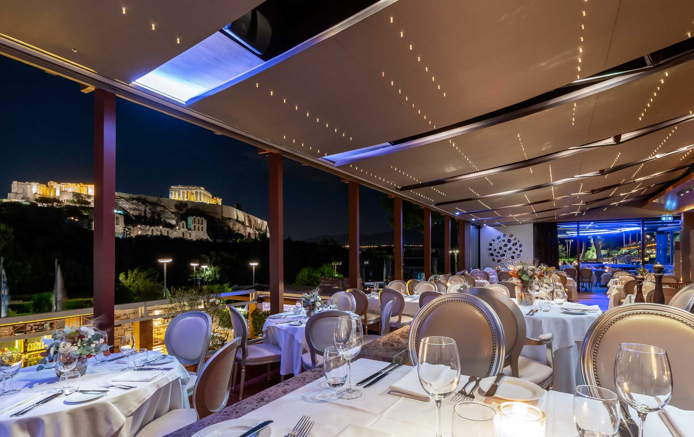

1. Six d.o.g.s
Alternative Bar · Garden Space
“Hip crowd, urban vibes.”
“Perfect for creative types.”
“Perfect for creative types.”

2. Gazarte
Live Music · Rooftop Views
“Chill rooftop with great cocktails.”
“Live music with a twist.”
“Live music with a twist.”

3. Booze Cooperativa
Cultural Hub · Bar & Art
“Drinks meet gallery!”
“Truly underground scene.”
“Truly underground scene.”

4. 360 Cocktail Bar
Rooftop Bar · Acropolis Views
“Sublime scenery and drinks.”
“Book a seat at sunset!”
“Book a seat at sunset!”

5. Lohan Nightclub
Dance Club · EDM Events
“Top DJs and vibrant energy.”
“Athenian nightlife at its peak.”
“Athenian nightlife at its peak.”

6. The Clumsies
Award-Winning Cocktails
“Consistently ranked top bar in the world.”
“Unique drinks & warm atmosphere.”
“Unique drinks & warm atmosphere.”

7. Baba au Rum
Rum Bar · Exotic Drinks
“World-class rum cocktails.”
“Tropical paradise in Athens.”
“Tropical paradise in Athens.”

8. Dybbuk
Underground Club · Techno Beats
“All-night dancing.”
“Top underground scene.”
“Top underground scene.”

9. Zonars Athens
Elegant Lounge · Retro Glam
“Historic, classy atmosphere.”
“Where style meets music.”
“Where style meets music.”

10. Brettos Bar
Oldest Bar · Wall of Bottles
“Colorful and cozy.”
“An Athenian classic.”
“An Athenian classic.”